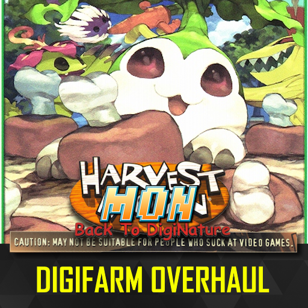
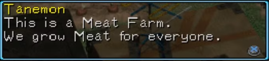
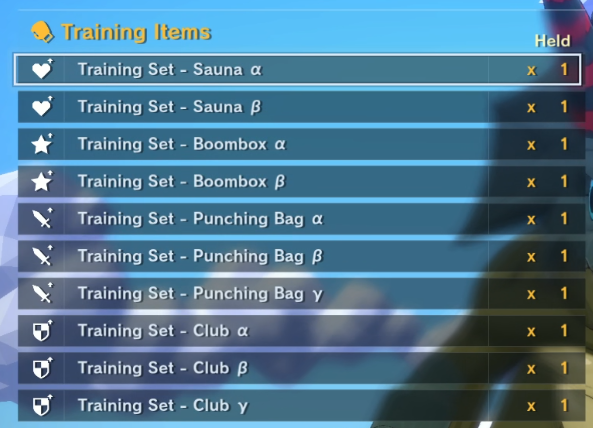
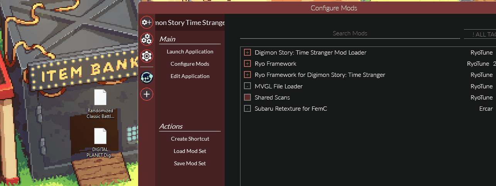

Do your part and vote for Digimon World GOG Dreamlist to preserve
literally the best game of all time on PC!


Overview: Your Farm is More Than Just a Gym!
Ever felt the DigiFarm was a bit... barren? Wishing you could do more with it than just train your Digimon? What
if your farm could actually farm and become a bustling hub for your entire team?
Harvest Mon: Back to DigiNature is a complete overhaul of the DigiFarm system in
Digimon Story: Time Stranger. This mod transforms the farm into a center of
passive resource generation, quality-of-life improvements, and introduced
expanded crafting, making it an essential and rewarding part of your Digimon-raising journey.

Make your Digimon work for their keep and be rewarded for it!
Core Features
1. A Living, Productive DigiFarm
Your DigiFarm is no longer just a passive training ground. It now lives up to its name by passively generating
valuable DigiFood!
- Passive Food Generation: The farm will now automatically produce various types of DigiFood
over time. The more Digimon you have on the farm, the better the yields!
2. Quality of Life Crafting & Bonding
I've streamlined the bonding process and expanded your crafting capabilities to make managing your team easier
and more rewarding.
- Friendship DX Conversion: Got a pile of assorted DigiFood? Convert them into
Friendship DX at Zudomon's shop for a massive, efficient boost to friendship!
- New Crafting & Breakdown Recipes: Zudomon's shop is now stocked with tons of new
recipes. Craft powerful curatives and attachments, or break down unwanted items into useful materials.
- Progressive Unlocks: Your crafting capabilities grow alongside your adventure! New recipes
become available at Zudomon's shop as you advance through the main story.
3. Clearer Training & Better Aesthetics
I've polished the DigiFarm training icons to make it more intuitive and visually diverse.
- Upgraded Naming Scheme: Training sets now use a clear, tiered naming system with Greek
letters (Alpha, Beta, etc.) to instantly communicate their effectiveness.
- New Icons: Enjoy new, distinct icons for training equipment, adding more visual flair and
clarity to the stats the training equipment specializes in.
NOTE: Currently, the naming feature is only available in the English Version of the game.

4. Optional Soundtrack Addons
Enhance the DigiFarm vibe with an optional soundtrack replacer. Swap out the default music for new tracks to make
your farm vibe more with you. This will randomize the music in the DigiFarm! You can toggle them on/off with the
reloaded-ii configuration.
The songs currently included are:
⚠️ Compatibility Warning
Heads up! This mod directly edits game data, so it won't play nice with other mods that touch the same files
(like shop data).
Specifically, it is NOT compatible with Better Shop out of the box. If you're
feeling adventurous, you can try using the MBE Mod Merger to combine them, but
your mileage may vary.
Installation

- Download the mod's zipped file (no need to extract it).
- Install the Mod: Drag and drop the zipped file directly
onto the main Reloaded II application window.
- Enable and Prioritize: In the Digimon Story Time Stranger mod list, click the
status indicator (- icon) to enable the mod (it will turn into a +
icon). Then, drag the mod to the top of the list to ensure
correct priority (match the GIF order).
- Launch the Game: Click Launch Application in Reloaded II.
- Enjoy: Its time to farm! You gotta grow your meat on the farm man!
Credits
- RyoTune for the awesome ModLoader
- Bitsoft for the
discovery of the adding items into the shop lineup.
- SlimeDoll for
extensive testing
- zeak6464 for pinpointing me where to look for
DigiFarms
- Myself for being the absolute
goat. The fucking madlad.